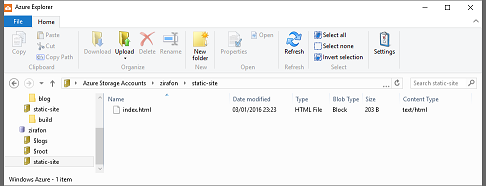

So I recently blogged about creating a bespoke blog for next to nothing. It ended up effectively being a static site hosted on github pages. So I thought why couldnt we do something similar with MSFT Azure blob storage?
I've used blob storage before but for its typical use; storing website assets with a CDN in front, but I dont see why this shouldn't work.
First of all its important to understand that Azure Blob Storage is not a web server so we immediately loose the benefits IIS brings. For example setting a default document. If I navigate to the root container ill get a 404. So we will have to be explicit in referencing our filename, in this case /index.html.
Another related issue is how will the browser know how to render the blob, seen as its not hosted on a webserver, what would the response headers be? A quick confirmation of this was to simply upload a test page and navigate to it.

And Navigating to it returns the following response headers.
HTTP/1.1 200 OK
Content-Length: 1492
Content-Type: text/html
Content-MD5: RWjh1LBpfG99DCHD+W1raQ==
Last-Modified: Mon, 04 Jan 2016 01:04:23 GMT
ETag: 0x8D314A2FC4F3940
Server: Windows-Azure-Blob/1.0 Microsoft-HTTPAPI/2.0
x-ms-request-id: 6e1b9f58-0001-0092-3091-46e306000000
x-ms-version: 2009-09-19
x-ms-lease-status: unlocked
x-ms-blob-type: BlockBlob
Date: Mon, 04 Jan 2016 01:47:42 GMT
Success!
So why would you want to consider this? Well its not suitable for all projects because of the limitations mentioned above but if the project suits a static site then the infrastructure that [Azure](https://azure.microsoft.com" target="_blank) and other notable cloud providers give you, is certainly worth exploring.
With the example below, I uploaded a static spa site, generated using [generator-react-static](https://www.npmjs.com/package/generator-react-static" target="_blank). This is to demonstrate what is possible.
[https://zirafon.blob.core.windows.net/index.html](https://zirafon.blob.core.windows.net/index.html" target="_blank)
The site will render basic markup and the client will retrieve the data it needs from light weight API's.
This can obviously scale as much as you need it to.
So this becomes a very affordable enterprise solution minus the enterprise prices. Thanks for reading.